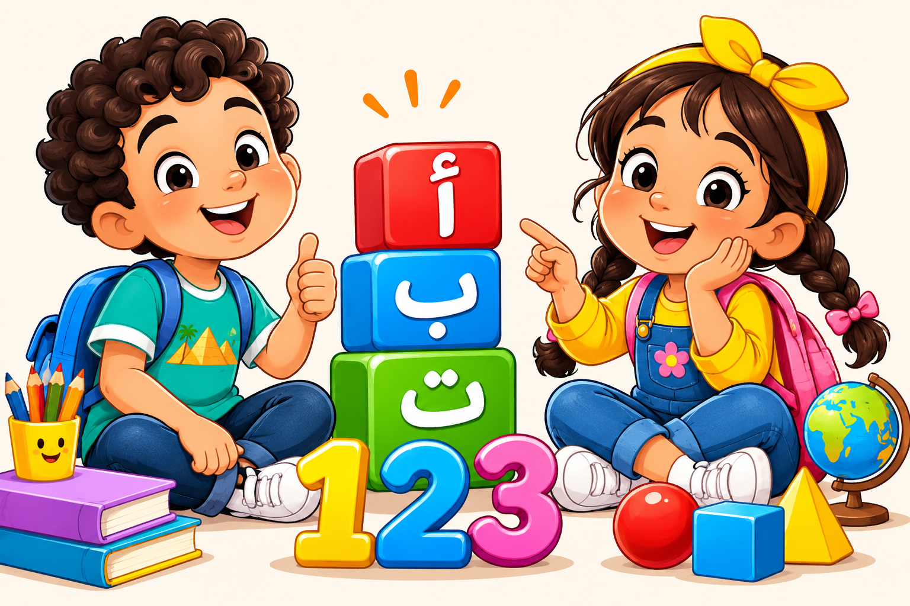

⭐ 0 نجمة
🎒 ذاكر يا يونس!
اتعلم والعب يا نوشّهْ • KG2

يا أهلاً بيك يا يونس! يلا نذاكر ونلعب!
🏆 إنجازات يونس
تم تضمين تسجيلات المُدرّسة المصرية داخل اللعبة للعمل دون إنترنت. بعض الأسئلة المتغيرة ما زالت تستخدم صوت الجهاز مؤقتًا لحين مطابقة المقاطع الصوتية واحدًا واحدًا.
كل لعبة فيها ٢٠ مستوى. اختار مستوى وابدأ يا يونس!
يلا يا نوشّهْ!
🎧 تسجيلات يونس الأصلية
اضغط للاستماع للتسجيلات اللي أرسلتها، بدون صوت الهاتف القديم
الملفات الأصلية متاحة بالكامل أوفلاين. ربط كل كلمة بسؤالها يحتاج مراجعة توقيت المقاطع.